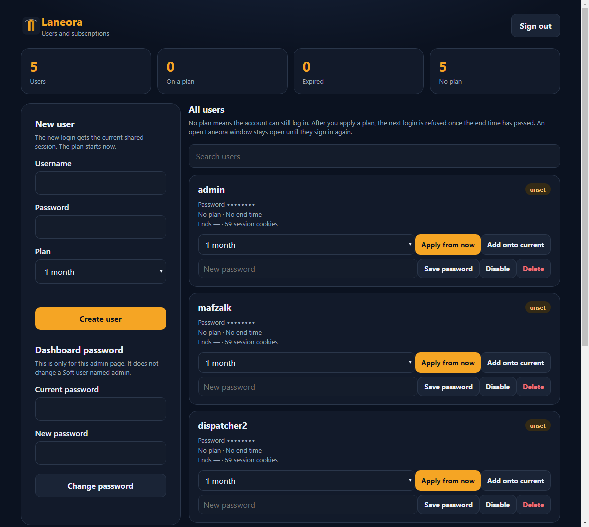
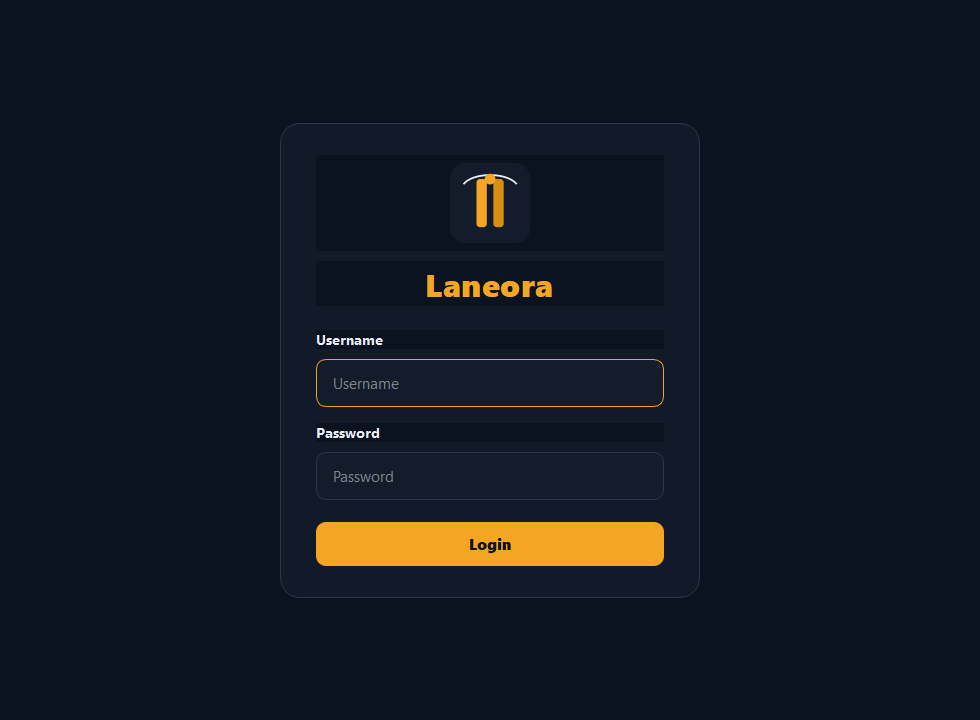

Soft server
Runs on the admin PC. New client logins stop if it stops. A search page that is already open stays open and retries.
Windows desktop · v3
Dispatchers sign in with a username an admin created. The Soft server checks the plan and opens the load search already signed in. The person at the client PC never types the board password.


Runs on the admin PC. New client logins stop if it stops. A search page that is already open stays open and retries.
A browser page on that same server. There is no seat cap. The same username cannot stay open in two Laneora windows.
PyQt and an embedded browser on each dispatcher PC. Closing one screen does not close the others.